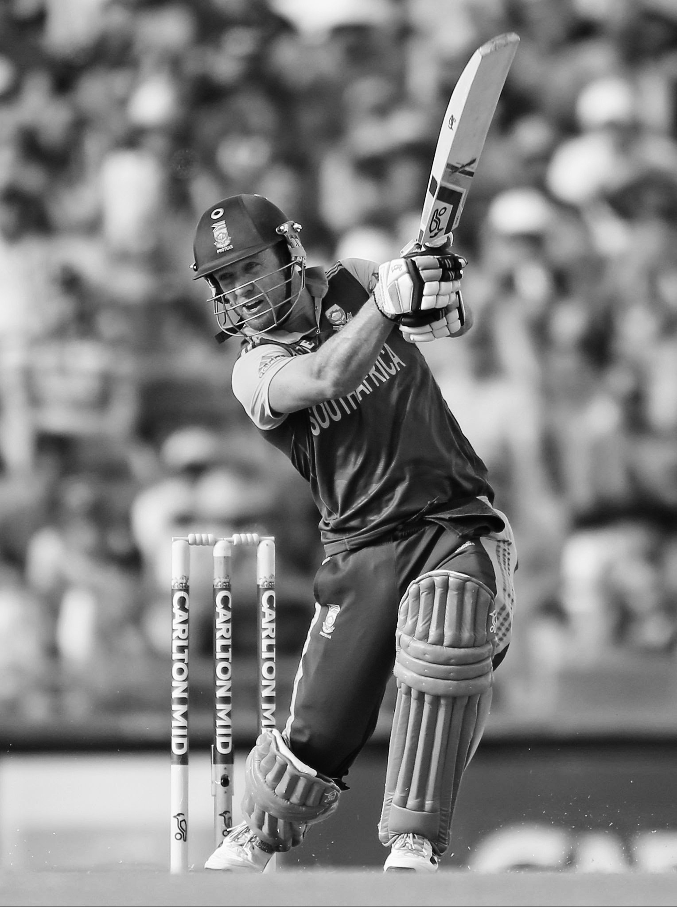

AB de Villiers - Mr. 360 Degree

- The full name of AB de Villiers is Abraham Benjamin de Villiers.
- He was born on 17 February 1984 in South Africa.
- He is one of the former international cricketers of South Africa.
- De Villiers is regarded as one of the greatest cricketers in the history of the game.
- AB de Villiers was adjudged ICC ODI Player of the Year thrice during his 15-year international career.
- De Villiers was one of the five Wisden Cricketers of the Decade at the end of 2019.
- AB de Villiers started his international career as a wicketkeeper-batsman.
- De Villiers made his international debut in 2004 in a Test match against England
and first played a One Day International (ODI) in early 2005.
- AB de Villiers batted at various positions in the batting order, but mainly played in the middle order.
- AB de Villiers scored more than 8,000 runs in both Test and ODI cricket.
- AB de Villiers retired from international cricket in May 2018
but continued to play in T20 leagues, including the Indian Premier League.
However, in November 2021, de Villiers announced retirement from all forms of the game.
For regular updates follow AB de Villiers on :